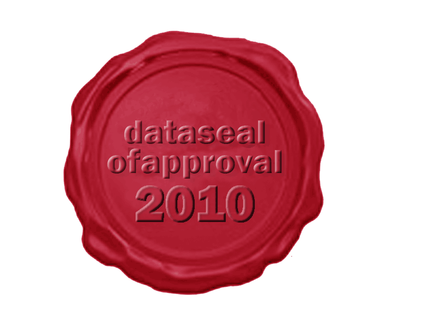

Welcome to the archive browser of The Language Archive. Please see below for a brief explanation on how to use the archive browser or get the full manual here. For more information about The Language Archive including the various tools it develops (such as ELAN), please have a look at the TLA website.
|
The Language Archive at the MPI has undergone the Data Seal of Approval assessment, which can be viewed by clicking on the following logo:  |
The Language Archive is a regular member of the ICSU World Data System. |
The Language Archive complies with the GÉANT Data Protection Code of Conduct for Service Providers. Our Privacy Policy can be viewed here.
Brief explanation:
On the left, you see a hierarchical organisation of the various corpora that are archived at TLA. You can browse through these corpora by opening up the various branches. When you select a certain node in the hierarchy, a number of buttons become available on the right side for various functions, depending on the type of node you have selected. These functions can be:
- View: View an archived resource. *
- Download: Download an archived resource to your own computer. *
- Download All: Download all archived resources that belong to the selected resource bundle (session).
- Metadata Search: Perform a search in all metadata descriptions underneath the selected branch.
- Content Search: Perform a search in all textual archived resources below the selected branch. *
- Citation: Get a persistent link for citing the resource or branch in a publication or for linking to it on a web site.
- Manage Access: Define access permissions on the selected branch (requires management permissions).
- Request Access: Request access to archived materials underneath the selected branch.
- Version Info: View information about different versions of the selected resource.
There are 4 access levels for archived materials, indicated by 4 coloured icons:
- Open: No login or registration is required
- Available to registered users: You can register as a user of the archive by clicking on the "register" link at the top.
 Access needs to be requested: By using the "Request Access" function, you can apply for access to these materials as a registered user. The depositor will be asked whether or not access can be granted to you, which may take some time.
Access needs to be requested: By using the "Request Access" function, you can apply for access to these materials as a registered user. The depositor will be asked whether or not access can be granted to you, which may take some time.- Closed: These materials are currently not accessible, mostly due to the sensitivity of the material
In addition to these access levels, it may be required to agree to a license agreement.
In case you have any further questions or would like to deposit language materials with us, please contact us via the contact form or the user fora on the TLA website.